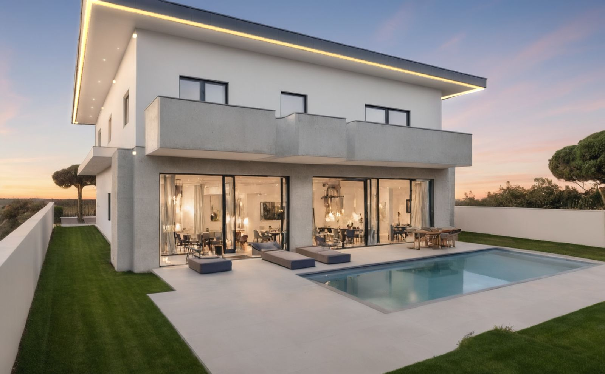
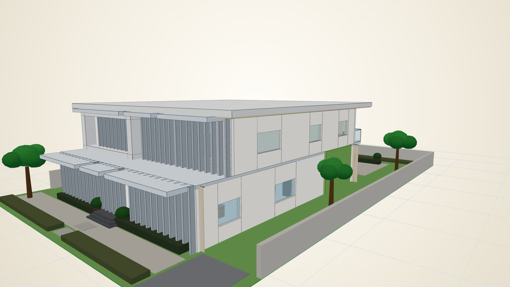
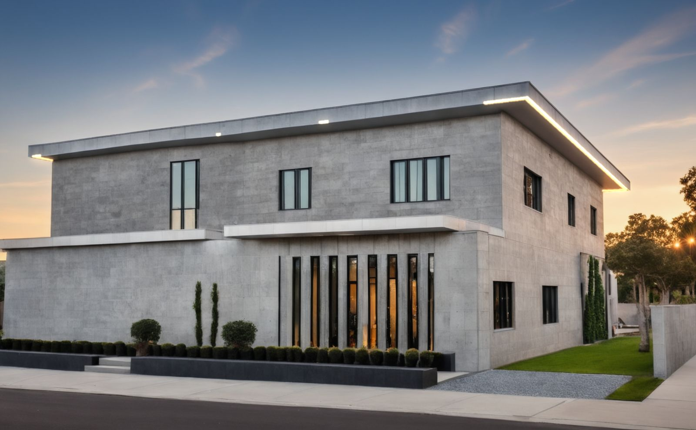
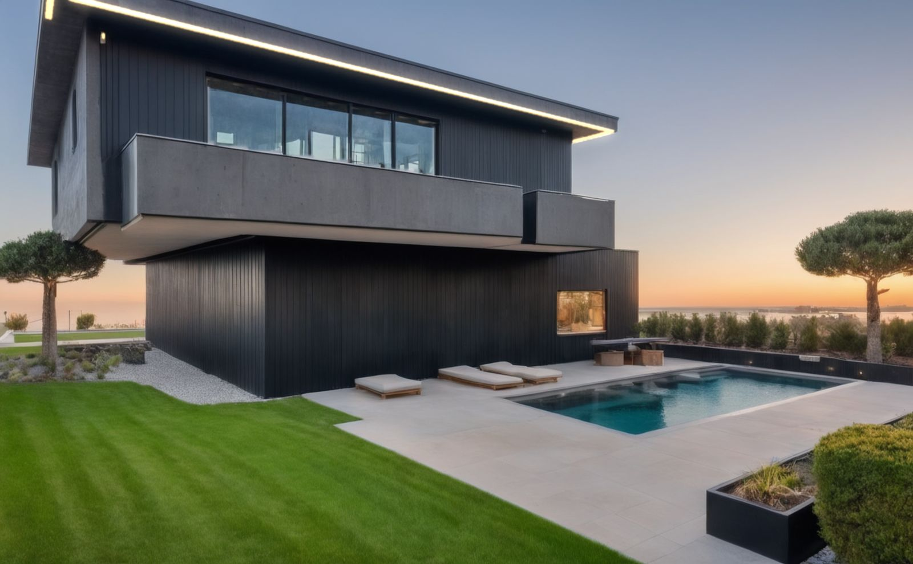

Model it in 3D.Get the drawings.
A house massed in Hatchline, rendered from its own model.
Hatchline is the massing tool for Malaysian architects. Put rooms on levels, see them in  3D, and let the drawings draw themselves.
3D, and let the drawings draw themselves.

A villa drawn from a Hatchline model
Build it.
Put rooms on levels, add the roof, the openings and the plot. The building stands up as you work.
Walk around it.
Turn the model, look at every side, and step inside the rooms.
Show it.
Then make the drawings, and photo-style pictures, from the same model.
A villa drawn from a Hatchline model
Place the rooms.
Put rooms on levels. The mass takes shape inside the plot, and the plot is where it starts.
See it in 3D.
Pull the levels apart and see how they stack. Windows, doors, slabs and every facade feature are in the model.
Check it.
Hatchline measures the model and checks it against the Uniform Building By-Laws 1984. You read the result, and the architect decides.
See what it checksPhotograph it.
Make a photo-style picture of the building you just walked around. Move the pointer to look around it.


Photograph it.
The by-laws, read for you.
Hatchline measures your model against the by-laws and lists what fails, what passes and what it cannot judge yet, with the by-law number beside each line.
- By-law 44(1)Room heights, residential
- By-laws 32–34The building on its lot
- By-law 38Distance from the boundary
A planning aid, not a certificate. The registered Architect or other Qualified Person submitting still checks and signs.